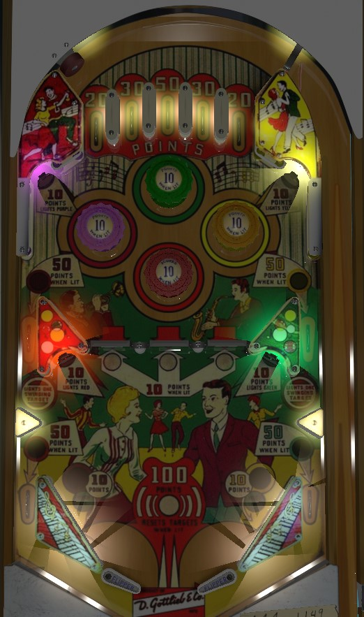

Light exactly 3 of the 4 colours around the playfield by hitting the corresponding standup targets in the corners of the game, then try to keep the ball in the bumpers to take advantage of their 10 point value. Lit colours are preserved from player to player, ball to ball, and game to game, unless you get all 4, in which case you score 100 points and all colours reset when that ball drains. If the ball goes through a side lane and you get to keep control, go ahead and try to shoot a lit spinner, but this doesn't happen often.
Score points as shown: 20 on the outsides, 50 in the middle, and 30 in between. No other scoring features.
The upper left, upper right, lower left, and lower right standup targets all score 10 points and light the purple, yellow, green, and red bumpers respectively. Bumpers score 1 point or 10 when lit. Lighting purple also lights the middle left side lane for 50 points instead of 10, and the left slingshot for 10 points instead of 1; lighting yellow does the same as purple, but on the right side; lighting red lights the left out lane for 50 points instead of 10; and lighting green lights the right out lane for 50 points instead of 10.
Lit colours are preserved from player to player, ball to ball, and game to game. If all 4 colours are lit, then at the end of that ball, the player in control scores 100 points and all 4 colours are turned off. Keep these rules in mind when playing a multiplayer game.
There are 3 spinners in the center of the table, referred to by the game as swinging targets. Spinners score 1 point per spin, or 10 per spin when lit. At the start of every ball, none of the spinner are lit. Making the middle left or middle right side lane lights one spinner. 1-point switch hits rotate which spinner is lit. Only one spinner can be lit at a time; rolling through a middle side lane when a spinner is already lit just changes which one is lit. Balls rolling down the table through any of the game's spinners are very liable to center drain.
There are no in lanes. Out lanes and slingshots are lit as described in the Colours section above. There is a very wide gap between the flippers and no center post of any kind, so ball control and ball times come at a premium. If necessary, learn to nudge the ball as it comes out of a middle side lane to ensure the ball makes it to a flipper and does not "drainbow" down the middle in a high arc.
There is no end of ball bonus, no extra ball, and no playfield special. Tilt ends game. In a 2-player game, tilt ends the game of the offending player only, and the other player can play out all of their remaining turns.